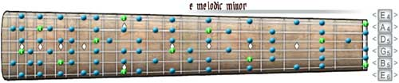
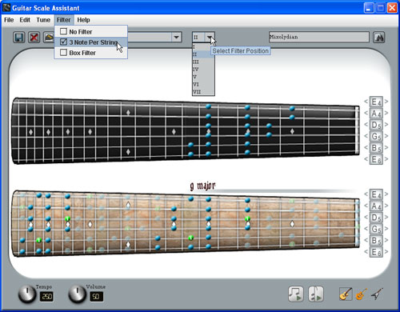

Links
About Guitar Scale Assistant
Getting Started
Using the Clickable Fretboard
Searching for Scales
Viewing Scales
Using the Tuners
Using the Audio Interface
Viewing Scales

Fig. 6 The display fretboard
The display fretboard displays the scales that you select. The green notes represent the root note of the scale. The display fretboard has the same tuning interface as the clickable fretboard. You can tune the display fretboard by clicking on the tuners left (tune down) or right (tune up) arrows. To tune the guitars back to standard tuning, click the Edit -> Tune Guitars Standard menu or load preset tunings from the Tune menu.
You can select scales to view either from the File -> View Scale menu or the search results list box shown in the "Searching for Scales" section.
Using the filters

Fig. 7 Filter options
You can view the scale with "3 Note Per String" or "Box" pattern filtering by selecting options from the Filter menu. The "position" dropdown allows further filtering by positions (I - VII).
< Prev | Next >